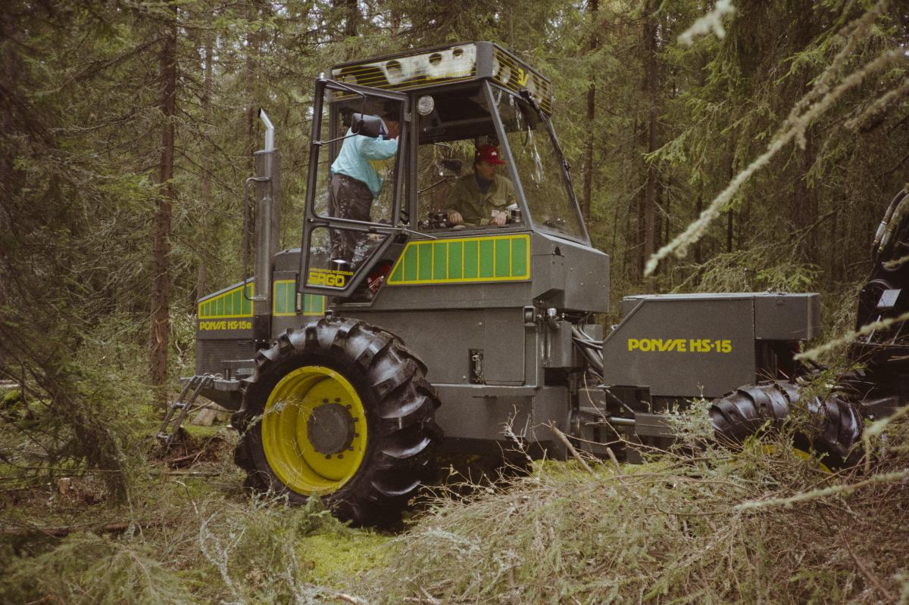

The Machine That Measured by Eating
In 1988, a Finnish forest harvester gripped each tree, felled it, and read it with the same hand — a measuring wheel and a diameter knife deciding where to cut before the operator ever saw the log.
Most of the machines in this museum are designed around a person. Keys assume fingers, mice assume a wrist, the Tongue Touch Keypad assumes a mouth. Even the industrial pieces put the human at the center of the loop. The Ponsse HS-15 is different. It was built around a tree, and the tree is destroyed in the act of being understood.
The tree is the workpiece and the ruler
A conventional logging crew measured trees by eye and tape. A feller judged the trunk's diameter and cut to suit whatever the mill had ordered that week. The HS-15, built by Ponsse Oy in Vieremä, Finland, collapsed that judgment into a stream of sensor readings.
The head of the machine — a crane-mounted assembly with no desk, no screen, and no keys — grips a standing stem, saws it off at the base, and drags it through a set of delimbing knives. As the trunk slides past, a measuring wheel rolls along the bark, counting length in centimeters. A diameter sensor reads how thick the stem is at each point. Those signals go to a control computer in the cab, which computes volume and, more importantly, decides the bucking points: the exact places where the stem should be cut into sawlogs, pulpwood, and waste.
The operator does not go out and measure. The operator sits in a cab and supervises a computer that is cutting to a price list. The wood is measured as it is eaten.

The sensor and the actuator are the same grip
Here is the thing I keep returning to. In almost every interface in the collection, the thing that senses and the thing that acts are separate components talking to each other. A joystick has a potentiometer for input and a motor for output. A synthesizer has a keyboard and a voice.
The harvester head does not. The same hydraulic grip that seizes the tree is the grip the sensors ride on. The delimbing knives that strip the branches are the same knives that read the diameter. The actuator and the sensor are not two systems exchanging signals; they are one hand, touching one piece of matter, and the touch is both the measurement and the destruction.
That makes the HS-15 the museum's clearest example of a measurement loop where the instrument cannot be separated from the tool. To measure the tree is to consume it. There is no second chance, no way to put the log back and check your arithmetic. The computed cut is the final word, and it is written in severed wood.
Ponsse's own record: the caliper arrives in 1986
I want to be careful about the dates here, because the interesting claim — that a computer was deciding bucking points — depends on when the sensing actually worked.
Ponsse's official company history places the measurement function right at the birth of the grapple harvester. The H 520 head launched in 1985, ran into trouble in grapple operation, and was followed by the H 60 at the end of that same year. In 1986, under a heading that reads, in the company's own words, "Measuring devices for harvester grapples," Ponsse records that it acquires those devices from Kajaani Automatiikka Ky — and that "the very first machine with a functioning diameter measuring device is delivered to contractor Voitto Muikku in Puolanka."
The HS-15 in the museum's photograph is dated August 1988, at the Metko forest-machine exhibition in Jämsänkoski. That puts it squarely inside the first generation of diameter-sensing Ponsse machines, and two years before the company introduced the computerized Kajaani 2000 loader-control system it later describes as years ahead of its time. The machine we are looking at is a genuine early specimen of a computer that measures a living thing in order to cut it correctly.
What the operator actually does
The cab of a modern harvester is not a place where a person cuts wood. It is a place where a person supervises a computer that cuts wood to specification. The operator selects a species and a log-length table, watches the computed diameter and volume scroll by, and overrides the proposed cuts when the wood turns out to be defective or the order changes.
This is the agricultural cousin of the numerically controlled machine tool. The resemblance is exact, and so is the difference. An NC mill starts from a drawing and a uniform billet of metal. The harvester starts from an irregular, living tree, sensed by a rolling wheel pressed against wet bark, and the specification is not a drawing but a mill's price list. The interface is the gap between what the caliper reads and what the saw does.
Why a museum of interfaces keeps it
The HS-15 is a reminder that many of the most consequential computer interfaces of the 1980s were never on a desk. This one is a hydraulic arm, a rolling wheel, a diameter knife, and a cab display — a computer wrapped so tightly around a physical process that its inputs are the bark of a tree and its outputs are the length and number of logs.
It reframes "data entry" as something a hungry machine does to a living thing. And it is the collection's first forestry interface, and its first measurement loop whose actuator and sensor are one and the same hand. Most of the machines here ask what a person can do with a computer. This one asks what a computer can do with a forest — and answers by measuring the tree in the seconds it takes to turn it into lumber.